FRONT DRIVE SHAFT ASSEMBLY > REASSEMBLY |
| 1. INSTALL FRONT DRIVE SHAFT DUST COVER LH |
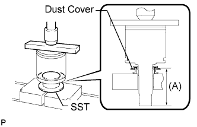 |
Using SST, a steel plate and press, press in a new dust cover.
| 2. INSTALL FRONT AXLE OUTBOARD JOINT BOOT |
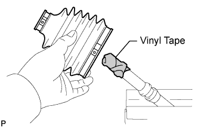 |
Slide a new outboard joint boot onto the outboard joint shaft.
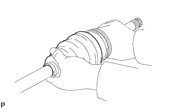 |
Temporarily install the boot to the outboard joint shaft.
Attach a new front No. 1 axle outboard joint boot setting clamp onto the boot.
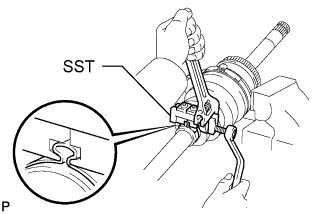 |
Using SST, pinch the clamp.
Pack the outboard joint and boot with grease from a boot kit.
Attach a new front No. 2 axle outboard joint boot setting clamp.
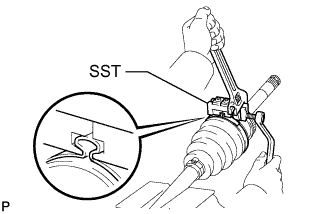 |
Using SST, pinch the clamp.
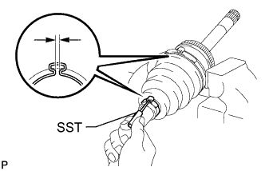 |
Using SST, adjust the clearance of the clamps.
| 3. TEMPORARILY INSTALL FRONT AXLE INBOARD JOINT BOOT |
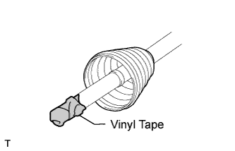 |
Slide a new inboard joint boot onto the outboard joint shaft.
| 4. INSTALL FRONT AXLE INBOARD JOINT SHAFT |
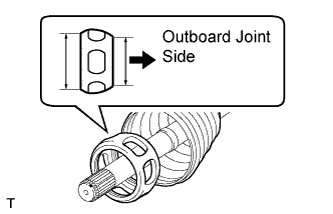 |
Install the cage to the outboard joint shaft.
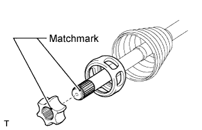 |
Align the matchmarks placed before removal.
Install the inner race.
 |
Using a snap ring expander, install a new snap ring.
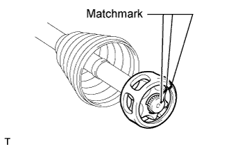 |
Align the matchmarks placed before removal, and install the cage to the inner race.
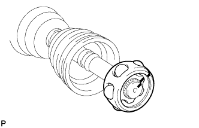 |
Install the 6 balls.
Pack the inboard joint shaft and boot with grease from a boot kit.
 |
Align the matchmarks placed before removal, and install the inboard joint shaft to the outboard joint shaft.
Install a new snap ring.
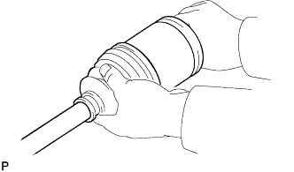 |
Temporarily install the boot to the inboard joint shaft.
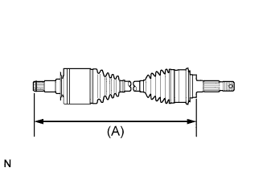 |
Check that the 2 boots are not stretched or contracted when the drive shaft is at standard length.
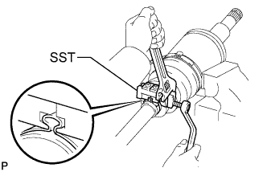 |
Using SST, attach a new front No. 1 axle inboard joint boot setting clamp.
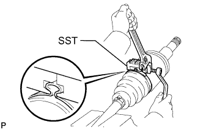 |
Using SST, attach a new front No. 2 axle inboard joint boot setting clamp.
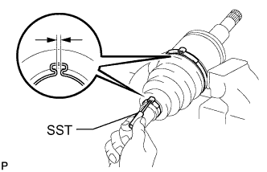 |
Using SST, adjust the clearance of the clamps.
| 5. INSTALL FRONT AXLE INBOARD JOINT SET SETTING SHAFT SNAP RING |
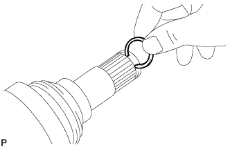 |
Install a new snap ring to the inboard joint shaft.
| 6. INSPECT FRONT DRIVE SHAFT ASSEMBLY |
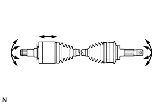 |
Check if there is excessive play in the outboard joint.
Check if the inboard joint shaft slides smoothly in the thrust direction.
Check if there is excessive play in the radial direction of the inboard joint shaft.
Check the boots for damage.
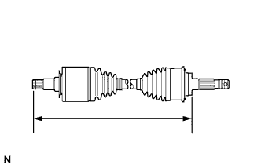 |
Check that the 2 boots are not stretched or contracted when the drive shaft is at standard length.